时代状态
战后修复阶段，社会秩序重建，许多家庭与个人仍处在失去与重逢的过渡期。

World
在科技更替与社会重建之间，手写信依然是最郑重的情感表达。
大陆战争结束后，人们尝试回归日常生活。铁路、邮政和通信网络逐步恢复， “自动手记人偶”在这个时代承担着重要角色，她们不仅代写文字，也帮助委托人整理无法直说的情感。
战后修复阶段，社会秩序重建，许多家庭与个人仍处在失去与重逢的过渡期。
邮政网络连接城市与边境，信件是跨越距离最可靠、也最有仪式感的媒介。
“我爱你”“对不起”“谢谢你”这些话难以出口时，信成为最温柔也最坚定的表达方式。
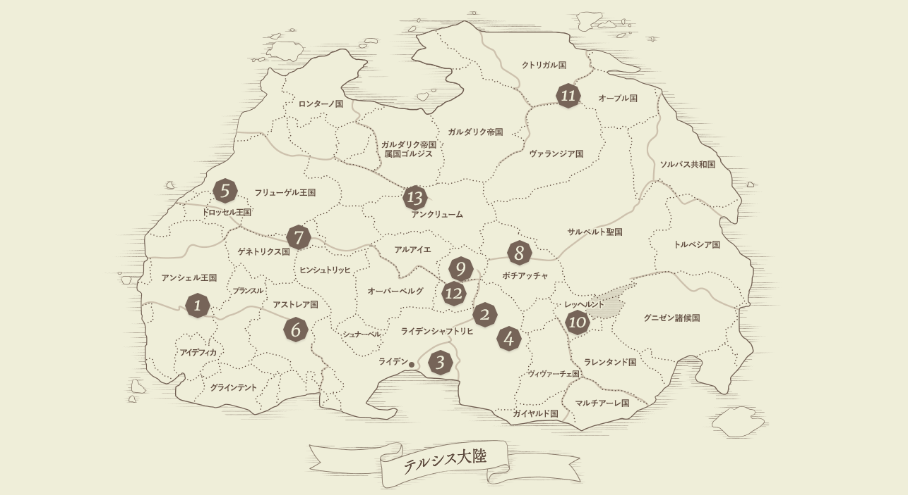
以下场景按官方 world 页面 `spot 1 - spot 13` 顺序整理，图片与地点名称一一对应。
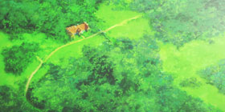
南西部重要城市，交通与医疗资源集中，是战后恢复阶段的关键支点之一。
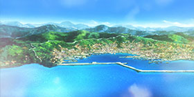
展示大陆尺度下的国家与地理结构，是理解政治、交通与战争历史的总入口。
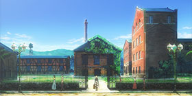
核心都市与港湾区域，邮政、商业与行政功能高度集中，是叙事主舞台之一。
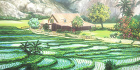
以农耕与地方生活景观见长，呈现与大城市不同的生活节奏与情感温度。
地区关系与政治象征并存，体现战后国家关系修复与共同秩序重建。
科学与观测设施象征新秩序，强调时代从战争走向知识与重建。
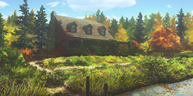
私人居所承载创作与哀悼，是“文字如何治愈创伤”的代表场景。
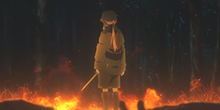
与战争记忆紧密关联的地点，常与人物的创伤与自我对话并置出现。
大战主战场相关地点之一，直接指向“失去”与“未完成告别”的核心主题。
家庭与亲情主题的关键空间，凸显“写给未来的信”这一作品名场面意象。
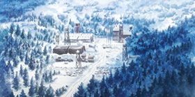
雪原据点与军事背景结合，强调北方战线环境与战争后遗留的现实压力。
铁路与港口连通形成“移动中的叙事空间”，也是信件流通的重要通道。
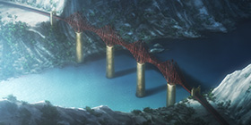
峡谷与桥梁构成的边地景观，强化了世界广度与“跨越阻隔”的主题意象。
委托人提出代笔需求，描述对象、关系与想传达的核心情绪。
自動手記人形将零散情绪转化为清晰叙述，帮助委托人找到真正想说的话。
邮政系统完成跨城市传递，让情感突破距离限制，在现实中抵达。
信件被阅读后形成回信、重逢或和解，进一步推动角色成长。
同一套世界观在 TV、外传、剧场版中不断扩展，视角从“国家与社会”逐步收束到“个体与告白”。
展示战后社会结构、邮政体系和角色所在的时代语境。
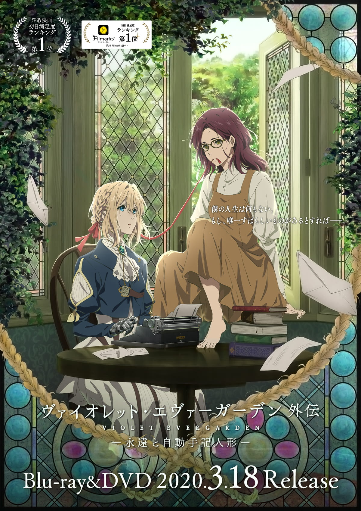
从女学校与贵族家庭切入，补充不同社会阶层的生存处境。
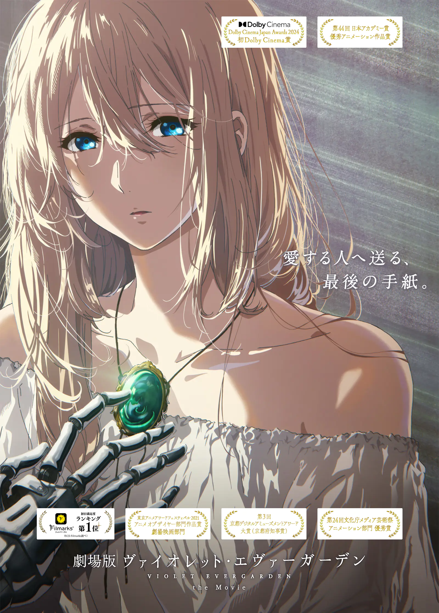
在技术与社会继续前进的时代中，角色终于完成对过去的回应。
在这个世界里，代笔并不只是把语言整理成句子。更重要的是，帮助委托人理解自己的心， 把迟疑、歉意、思念与感谢，变成可以被对方读懂的文字。薇尔莉特的成长，也正是在这一封封信中发生。